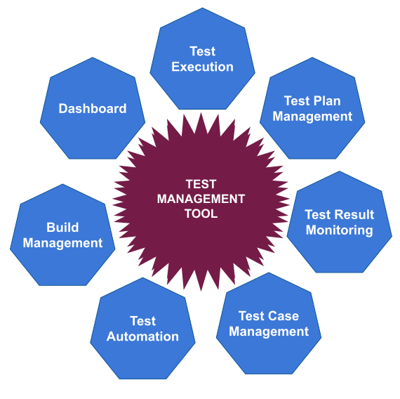

Software Testing
Bookmarks
- Errors
- Bugs
- Test management
- Testing paradigms
- Testing paradigms
- Functional Testing
- Continuous integration
Errors
When software do not behave correctly we say that we found an error. This is not only when the program crash and does no longer work. If the program works but produce bad results or behave unexpectedly that is an error. So an error is considered when the program do not follow the specification.
Bugs
In the early days computers used to have physical contacts and relays. Once an IBM operator has found a mysterious bug squashed between the contacts. Since then every time an error is found in a program we say "there was a bug found". Reality is software do not have bugs. It is just an expression used for hidden defects. A program has bugs if do not behave properly.
Test management
It is important to use a test management tool to manage your tests. Most tools enable manual startup but your test is not considered manual testing though you start it manually. These tools can support only automatic testing. The only tool I have used for test automation it is called Jenkins. But there are many other tools of this kind.

Testing Paradigms
Manual testing: The most simple and direct method of testing. This is also the most expensive. It is a reliable method if the team has good testers. That’s right there are persons that do not do anything else in a team but perform testing. If a team is Agile team then the testing is performed by developers. The manual testing can be based on a testing plan.
Automatic testing: Is less popular but much more efficient than the manual testing. For this a team can use a tool that can run jobs at regular time interval. Each job perform a specific task that represents one or more test cases. The task is usually based on input data or initial state of the system. After a series of actions run automatic the final result is evaluated. If the result is unexpected we have found a defect.
Negative test
We can have two kind of tests: Positive and Negative. When we create a test plan we can design both cases. A positive test case is based on good data and expect good results. The negative test case is based on bad data and system must not crash but elegantly detect the bad situation and graciously report the errors and continue. If the system do not detect the bad case we have found an error.
Unit Testing
A Unit Test Case is a part of code, which ensures that another part of code works as expected. To achieve the desired results quickly, a test framework is required. It depends on your computer language to have available a "unit test framework". For example JUnit is a perfect unit test framework for Java programming language.
A unit test case is characterized by a known input and an expected output, which is prepared before the test is executed. The known input should test a precondition and the expected output should test a post-condition.
There must be at least two unit test cases for each feature: one positive test and one negative test. If a a feature has sub-features, each sub-feature must have at least two test cases as positive and negative.
It depends on test type what you do when Unit test fails. Do you continue or stop? If the feature is not critical, you can report the error and continue. If is a critical feature then you should stop tho shorten the time spend for testing.
End to End Testing
Usually every software component is individually tested. This is good but the components must also work together. We can test this with a larger test suite that simulate a full workflow from start to end. This is also known as integration test. It is used to verify that all components collaborate well and there is no communication issue between components.
Functional Testing
The functional test is focusing on the functionality of the application. We verify user interface and check if all user actions have the right effect or result. This is harder to achieve then the unit testing. Usually the functional testing is not automatic and require user interaction.
You may think, development is difficult. Testing is something easy. But the truth is, if you do it right, the testing is much harder. It require skills and special knowledge a regular developer do not have. Let's see the anatomy of a test project.
Functional Test / Components
1. Data fixture
A fixture is defined for a good test. This is the initial state of the system or the initial data-set. We must be able to establish initial fixture before we can run a test. For example a database can be back-up before test start. We run the test-cases, store the logs and keep this database active for developers to check. Next time we create a new database using the same fixture. We run again and see the differences between the new database and the previous database.
2. Test case
A software system is designed to perform functions or has features. When we use the system in a predefined way we have a workflow or a series of actions we perform to reach a result or system state. This series of actions is called use-case. So a system is designed to cover one or more use-cases. When we test one of the use-cases we say that we have a test case. So this is a test case: testing a set of system features.
3. Test scripts
A test script is a series of test cases performed in a specific order for one time or multiple times. The advantage of a test script is that we have a name for it and a description. So all developers and testers can talk about the same set of use-cases.
4. Test suite
Multiple test scripts can be run in a particular order. This is named a test suite and can be created using multiple test scripts. Usually a test suite will aim to include all possible test cases. The more cases are included the better the suite is.
Test coverage
A test suite is designed to test software features. For example if a program has 100 functions and all of them are tested then we say that we have 100% test coverage. One test suite can cover less or equal to 100%. If the software is modified and new functionality is created the coverage will decrease unless the test suite is updated.
Test results
When a test is executed we must record some data. The name of the test suite or the code, the date/time of test start and the date/time of test end. We must also record if test is completed normally or it crash unexpectedly. A good test usually performs all the test cases and reports the number of cases who pass and the number of cases that failed.
Test logs
It will be kind of difficult to find a test error if we can’t trace the error back to the exact location and situation leading to the error. For this we need very precise logs with each use-case. How much time it took to execute? What is the exact case code that failed? How hard was the failure: error, warning, fatal error? maybe other important data like: program name and line number.
Saving test results
Every time a test run we must save the logs and the results in organized system. Sometimes we store this data for a month or even more then a month. We need to know if a particular test keep failing. Having this data can reveal a reoccurring bug. We can check when a bug was first found and when it was fixed. For short we can do data mining to analyze past testing results.
Continuous integration
It is an automatic testing paradigm. Continuous integration is happening immediately after one developer has modified the program in any way. This is done on CI server. On this servers one or more jobs will be triggered when a check-in is executed. Usually a tool like Jenkins is managing this test server. Jenkins can organize multiple test suites and schedule test jobs.
Dry-runs
A dry-run is inspired from the car test. We can start the engine and listen. If the engine sound right and there is no smoke out anywhere then we can continue with drive test. We can switch the gears and start moving the car. If there is smoke we can’t continue any test, we have to turn off and check the engine.
We can run the software with no data to process or no users connected. For example we create an empty database and we run the software with no data. We execute several relevant use-cases. The program should not crash just because there is no data present.
Smoke test
The smoke apply to repairs of electric appliances or home electronics. If we smell smoke when we turn on the appliance we stop doing other test. A smoke test is very similar to a dry-run. Smoke test has some data maybe one or two records in each table. The smoke test must be very fast. This test is run very often for continuous integration.
Nightly test
This kind of test is executed maybe once every day during the night when no developer will commit changes. Sometimes this test can be also known as stress test. During this test we can use a significant data-set that can be useful to measure the performance of the system. The test results of nightly test are used as baseline for next day to fix bugs and performance issues.
Read next: Database Systems